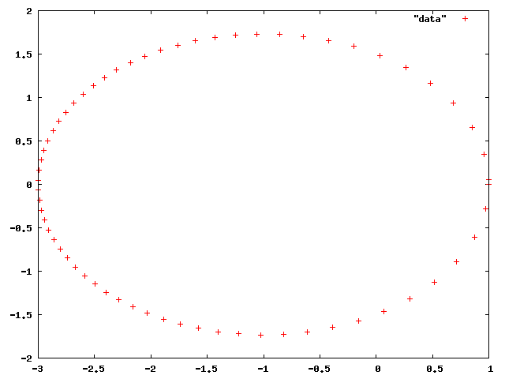

$ f(x) = x^2 - 2 = 0$ の解をニュートン法で求めるプログラムを作成せよ。プログラムは収束判定条件により、有効数字が14桁程度になったら終了するようにすること。また、プログラムは初期値 $ x_0$ が入力できるようにし、プログラムの構造は以下のようにすること。
#include <stdio.h>
#include <math.h>
double f(double x)
{
return 『関数の中身』;
}
double df(double x)
{
return 『関数の中身』;
}
int main ()
{
/* ここにニュートン法のアルゴリズムを書く */
}
以下は初期値を 3 としたときの出力例である。
3.0000000000000 1.8333333333333 1.4621212121212 1.4149984298948 1.4142137800472 1.4142135623731 1.4142135623731
$ f(x) = x - 0.5\sin x - 1 = 0$ の解のうち、$ 0 \lt x \lt 2$ を満たすものを、ニュートン法で求めるプログラムを作成せよ。
以下は初期値を 3 としたときの出力例である。3.0000000000000 1.7094014462151 1.5090455964419 1.4987286784980 1.4987011337141 1.4987011335178
$f(x) = (x-1)(x-2)(x-3) = 0$ の根をニュートン法で求める。初期値 $x_0$ を $ (a)\ x_0 = -2, (b)\ x_0 = 2.8 $ とした場合、それぞれどの解に収束するか、理由とともに答えよ。
発展問題 (余裕のある人だけやること)
ケプラー方程式 $ u - e\sin u = l$ を解くことによって、天体の軌道を求めることを考える。以下のような手順で軌道を求める。
これを実行するプログラムを作成せよ。グラフは gnuplot で描くこと。グラフは以下のようになる。
